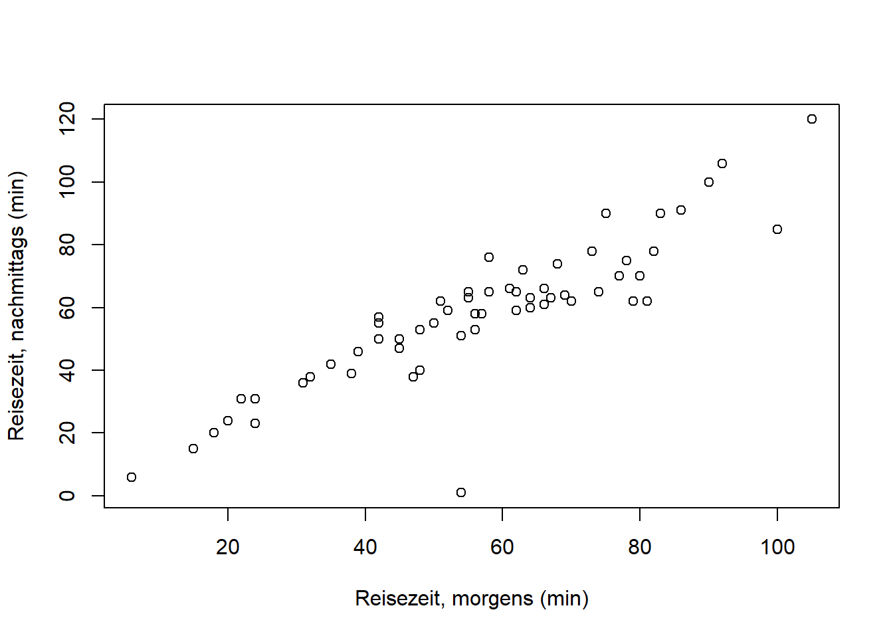
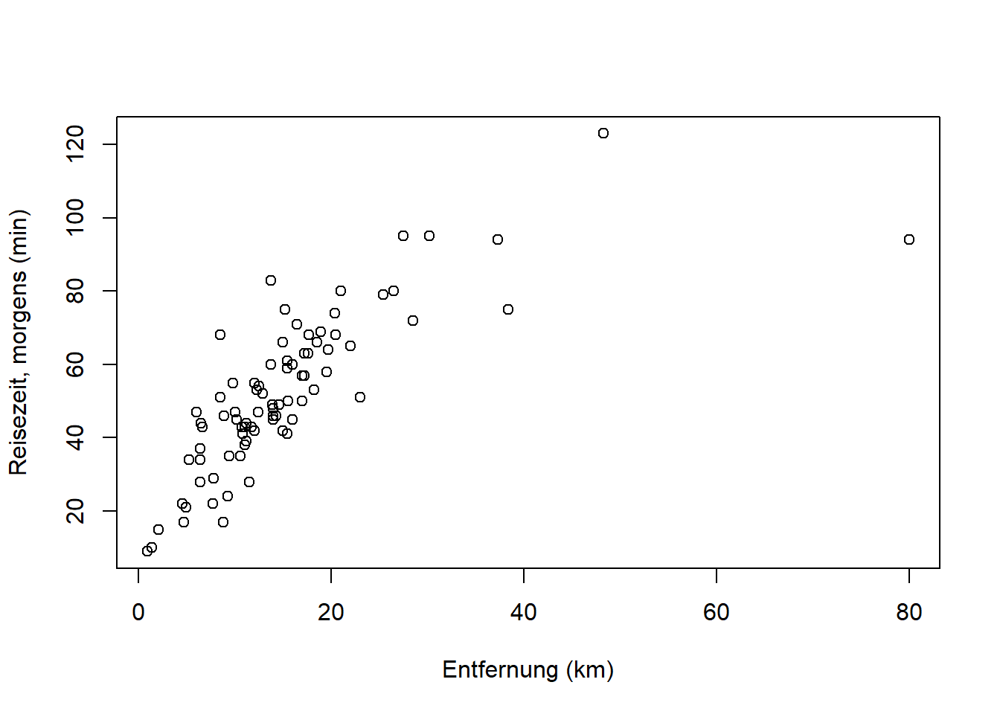

Kapitel 5 Korrelationsanalyse
Lesen Sie hierzu bitte Kapitel 3.4.2 von Zimmermann-Janschitz (2014). Die Fragen, die uns besonders interessieren sind:
- Gibt es einen Zusammenhang zwischen zwei Merkmalen?
- Wenn ja, wie kann dieser Zusammenhang charakterisiert werden?
- Wie stark ist der Zusammenhang zwischen den Merkmalen?
- Wie kann man den Zusammenhang visualisieren?
Die Verfahren sind unterschiedlich für nominalskalierte, ordinalskalierte und metrische Merkmale. Wir werden diese jetzt nacheinander einführen. Die Themen können Sie in Mittag (2016), Kapitel 8 und 9 vertiefen.
5.1 Nominalskalierte Merkmale: Kontingenztabelle und Chi-Quadrat Statistik
Wir wollen diese Methode am Beispiel des Volksentscheids Tegel von 2017 verdeutlichen.1 Der Beschlussentwurf lautete:
“Der Flughafen Berlin-Tegel „Otto-Lilienthal“ ergänzt und entlastet den geplanten Flughafen Berlin Brandenburg „Willy Brandt“ (BER). Der Berliner Senat wird aufgefordert, sofort die Schließungsabsichten aufzugeben und alle Maßnahmen einzuleiten, die erforderlich sind, um den unbefristeten Fortbetrieb des Flughafens Tegel als Verkehrsflughafen zu sichern!”
Wir stellen uns die Frage: Gibt es einen Zusammenhang zwischen Abstimmungsverhalten und Bezirk? Man könnte meinen, dass Anwohner*innen in der Einflugschneise von Tegel eher für “nein” stimmten (d.h. für die Schließung), Anwohner*innen in der Einflugschneise des neuen BER dagegen eher für “ja” (d.h. gegen die Schließung). Überlegungen wie diese motivieren unsere Fragestellung.
Die Kontingenztabelle (oder Kreuztabelle) zu diesem Beispiel finden Sie in Abbildung 5.1.

Abbildung 5.1: Kontingenztabelle zum Abstimmungsverhalten im Volksentscheid Tegel 2017 nach Bezirk.
Quelle: https://www.wahlen-berlin.de/wahlen/BU2017/afspraes/ve/index.html.
In dieser Tabelle stehen absolute Häufigkeiten (vgl. Kapitel 3) für alle Kombinationen von Merkmalsausprägungen der Variablen \(X\) und \(Y\). \(X\) bezeichnet “Bezirk” mit den Ausprägungen \(a_1, a_2, \ldots, a_n\). \(Y\) bezeichnet “Abstimmungsverhalten” mit den Ausprägungen \(b_1\) (“ja”) und \(b_2\) (“nein”). Die Spalten- bzw. Zeilensummen sind die sogenannten Randverteilungen von \(Y\) und \(X\). Ganz unten rechts steht der Stichprobenumfang (die Anzahl der Personen, die abgestimmt haben). Der Stichprobenumfang kann sowohl als Summe der Randverteilungswerte von \(X\), als auch als Summe der Randverteilungswerte von \(Y\) errechnet werden.
Die allgemeine Notation der absoluten Häufigkeiten einer Kontingenztabelle finden Sie in Abbildung 5.2. In dieser Notation stehen \(h_{\cdot j}\) und \(h_{i \cdot}\) für die Werte der beiden Randverteilungen.

Abbildung 5.2: Notation der absoluten Häufigkeiten in einer Kontingenztabelle.
Nach: Mittag (2016).
Wir können die Kontingenztabelle für dieses Beispiel auch mit relativen Häufigkeiten darstellen (Abbildung 5.3).

Abbildung 5.3: Kontingenztabelle zum Abstimmungsverhalten im Volksentscheid Tegel mit relativen Häufigkeiten.
Als nächstes müssen wir den Begriff der bedingten relativen Häufigkeit einführen. Die bedingte relative Häufigkeit ist die Häufigkeit einer Ausprägung des einen Merkmals relativ zur Häufigkeit einer bestimmten Ausprägung des zweiten Merkmals, d.h. “bedingt” dadurch, dass wir uns auf eine Ausprägung des zweiten Merkmals festlegen. Relative Häufigkeiten existieren somit in zwei “Richtungen” in einer Kontingenztabelle (Abbildung 5.4).


Abbildung 5.4: Illustration relativer Häufigkeiten in einer Kontingenztabelle. Links: Absolute Häufigkeiten der Ausprägungen von \(X\) unter der Bedingung \(Y=b_j\). Rechts: Absolute Häufigkeiten der Ausprägungen von \(Y\) unter der Bedingung \(X=a_i\).
Nach: Mittag (2016).
\[f_Y\left(b_j|a_i\right)=\frac{h_{ij}}{h_{i\cdot}}\quad \text{mit}\quad j=1, 2, \ldots, m\] \(f_Y\left(b_j|a_i\right)\) steht für die relative Häufigkeit einer Merkmalsausprägung \(b_j\) von \(Y\), bedingt durch eine bestimme Ausprägung \(a_i\) von \(X\). Die Bedingtheit wird mit dem Zeichen \(|\) ausgedrückt.
\[f_X\left(a_i|b_j\right)=\frac{h_{ij}}{h_{\cdot j}}\quad \text{mit}\quad i=1, 2, \ldots, k\] \(f_X\left(a_i|b_j\right)\) steht für die relative Häufigkeit einer Merkmalsausprägung \(a_i\) von \(X\), bedingt durch eine bestimme Ausprägung \(b_j\) von \(Y\).
Beispiel:
Die relative Häufigkeit von “ja” unter der Bedingung “Charlottenburg-Wilmersdorf” ist (vgl. 5.1): \[f_Y\left(b_1|a_4\right)=\frac{h_{41}}{h_{4\cdot}}=\frac{109799}{158471}=0.69\] D.h. 69% der Stimmen in Charlottenburg-Wilmersdorf waren “ja” Stimmen.
Die relative Häufigkeit von “Charlottenburg-Wilmersdorf” unter der Bedingung “ja” dagegen ist: \[f_X\left(a_4|b_1\right)=\frac{h_{41}}{h_{\cdot 1}}=\frac{109799}{994916}=0.11\] D.h. 11% der “ja” Stimmen kamen aus Charlottenburg-Wilmersdorf.
Was hat das alles mit dem Zusammenhang zwischen Abstimmungsverhalten und Bezirk zu tun?
Die bedingten relativen Häufigkeiten helfen uns, etwas über die Abhängigkeit bzw. Unabhängigkeit der beiden Merkmale zu sagen. Das läuft über das Konzept der empirischen Unabhängigkeit:
Intuitiv werden wir Unabhängigkeit von \(X\) und \(Y\) als gegeben ansehen, wenn die Ausprägung eines Merkmals keinen Einfluss auf die Ausprägung des anderen Merkmals hat. Dies bedeutet, dass eine bedingte Häufigkeitsverteilung für ein Merkmal nicht davon abhängt, welche Merkmalsausprägung für das andere Merkmal als Bedingung vorausgesetzt wird. D.h. der Anteil von Charlottenburg-Wilmersdorf an den “ja” Stimmen sollte etwa so groß sein wie der Anteil von Charlottenburg-Wilmersdorf an den “nein” Stimmen. Bzw. der Anteil der “ja” Stimmen in Charlottenburg-Wilmersdorf sollte etwa so groß sein wie der Anteil der “ja” Stimmen in jedem anderen Bezirk.
In Formeln ausgedrückt heißt das: \[f_X\left(a_i|b_1\right)=f_X\left(a_i|b_2\right)=\cdots=f_X\left(a_i|b_m\right)\]
Bzw.: \[\frac{h_{i1}}{h_{\cdot 1}}=\frac{h_{i2}}{h_{\cdot 2}}=\cdots=\frac{h_{im}}{h_{\cdot m}}=\frac{h_{i\cdot}}{n}\]
Allgemein formuliert: \[\frac{h_{ij}}{h_{\cdot j}}=\frac{h_{i\cdot}}{n}\]
Das Umstellen dieser Gleichung nach \(h_{ij}\) ergibt:\[h_{ij}=\frac{h_{i\cdot}\cdot h_{\cdot j}}{n}:=\tilde h_{ij}\] Diese absolute Häufigkeit, die wir mit \(\tilde h_{ij}\) bezeichnen, ist die bei empirischer Unabhängigkeit erwartete absolute Häufigkeit. Das Zeichen \(:=\) bedeutet “wird definiert als”. Wir haben uns also mit Hilfe der relativen Häufigkeiten in der Kontingenztabelle und unserer Konzeption der empirischen Unabhängigkeit neue, bei Unabhängigkeit erwartete absolute Häufigkeiten an jeder Stelle der Kontingenztabelle generiert. Diese können wir jetzt mit den tatsächlichen absoluten Häufigkeiten in der Kontingenztabelle vergleichen (Abbildung 5.5). Sind die Abweichungen klein können wir von Unabhängigkeit der Merkmale ausgehen. Sind die Abweichungen groß können wir von Abhängigkeit ausgehen.

Abbildung 5.5: Vergleich der beobachteten absoluten Häufigkeiten \(h_{ij}\) und der bei empirischer Unabhängigkeit erwarteten absoluten Häufigkeiten \(\tilde h_{ij}\).
Als Vergleichsmaß wird die sogenannte Chi-Quadrat Statistik \(\mathcal{X}^2\) (oder quadratische Kontingenz) verwendet, und das ist dann auch unser Zusammenhangsmaß für nominalskalierte Merkmale. \(\mathcal{X}^2\) ergibt sich aus der Differenz der tatsächlichen Häufigkeiten \(h_{ij}\) und den erwarteten Häufigkeiten bei empirischer Unabhängigkeit \(\tilde h_{ij}\): \[\mathcal{X}^2=\sum_{i=1}^{k}\sum_{j=1}^{m}\frac{\left(h_{ij}-\tilde h_{ij}\right)^2}{\tilde h_{ij}}\]
Bei Unabhängigkeit der Merkmale ist \(\mathcal{X}^2=0\). Bei vollständiger Abhängigkeit ist \(\mathcal{X}^2=\mathcal{X}_{max}^2\), wobei \(\mathcal{X}_{max}^2=n\cdot(M-1)\) mit \(M=\min(k;m)\). D.h. der maximal mögliche Wert der \(\mathcal{X}^2\) Statistik ergibt sich durch die Dimensionen der Kontingenztabelle, die Zeilenanzahl \(k\) und die Spaltenanzahl \(m\). Dadurch können wir leider die Größenordnung der \(\mathcal{X}^2\) Statistik schlecht intuitiv einordnen, was unser Beispiel verdeutlicht:
Für den Volksentscheid Tegel ergibt sich ein Wert von \(\mathcal{X}^2=49895.1\), wobei \(\mathcal{X}_{max}^2=1732940\). Da \(\mathcal{X}^2\) näher an \(0\) ist als an \(1 732 940\), scheint die Abhängigkeit der Merkmale “Bezirk” und “Abstimmungsverhalten” gering zu sein. Ob sie dennoch statistisch signifikant ist können wir erst mit einem sogenannten Chi-Quadrat-Test beurteilen, den wir als Teil der schließenden Statistik in Kapitel 11 kennenlernen.
5.2 Ordinalskalierte Merkmale: Rangkorrelationskoeffizient nach Spearman
Hier ist das Beispiel des Zusammenhangs von Grünflächenanteil und Bildungsgrad in Stadbezirken in Zimmermann-Janschitz (2014), Kapitel 3.4.2, S. 274 - 278 sehr anschaulich. Das Merkmal “Grünflächenanteil” ist zwar metrisch skaliert, muss aber ordinal skaliert werden, um es mit dem Merkmal “Bildungsgrad” vergleichbar zu machen, das bereits ordinal vorliegt. S. Tabelle 3.36 (Zimmermann-Janschitz 2014, S. 277).
Der Rangkorrelationskoeffizient nach Spearman \(r_s\) für \(n\) Wertepaare \(\left(x_i,y_i\right)\) mit \(i=1, 2, \ldots, n\) wird dann berechnet durch: \[r_s=1-\frac{6\cdot\sum_{i=1}^{n}d_i^2}{n\cdot\left(n^2-1\right)}\] Wobei \(d_i\) die Differenz der Ränge der beiden Merkmale \(X\) und \(Y\) ist.
Bei perfekter negativer Rangkorrelation ist \(r_s=-1\).
Bei perfekter positiver Rangkorrelation ist \(r_s=1\).
Wenn keine Rangkorrelation vorliegt ist \(r_s=0\).
Bei dem Grünflächenanteil/Bildungsgrad Beispiel von Zimmermann-Janschitz (2014) ist \(r_s=0.84\), die beiden Merkmale sind also stark positiv korreliert. D.h. größere Anteile von Grünflächen sind tendenziell mit höheren Bildungsgraden assoziiert und kleinere Anteile von Grünflächen sind tendenziell mit geringeren Bildungsgraden assoziiert.
5.3 Metrische Merkmale: Scatterplot (Streudiagramm) und Korrelationskoeffizient nach Bravais-Pearson
An dieser Stelle können wir zu unseren Reisedaten zurückkehren. Beide Merkmale (“Distanz” und “Stationen”) sind metrisch skaliert2 und somit können wir den Korrelationskoeffizienten nach Bravais-Pearson verwenden, der mehr Informationen über den Zusammenhang, nämlich Linearität, liefert. Einen ersten Eindruck verschafft der Scatterplot (auch Streudiagramm), den wir einfach mit der plot() Funktion in R generieren:

An dieser Stelle fällt das Wertepaar \((0, 40)\) oben links auf. Hierbei handelt es sich wahrscheinlich um eine Person, die gar nicht in Berlin wohnt. Anstatt \(0\) wollen wir hier aber einen fehlenden Wert erzeugen, der in R mit “NA” markiert wird, da diese Frage auf die Person gar nicht zutraf. Darstellungen wie diese sind somit enorm hilfreich für die Überprüfung der Daten!
Ersetzen wir also \(0\) Stationen mit “NA” und plotten erneut:
# 0 mit NA ersetzen
reisedat$stationen[reisedat$stationen == 0] <- NA
# plotten
plot(reisedat$stationen, reisedat$distanz,
xlab = "Anzahl Stationen", ylab = "Entfernung (km)")
Aufgabe: Überlegen Sie kurz, wie stark die Korrelation hier sein wird! (Auflösung weiter unten.) Überlegen Sie außerdem, woher die Streuung in “Entfernung” kommen könnte.
Die lineare Korrelation zweier metrischer Merkmale wird üblicherweise mit dem Produkt-Moment-Korrelationskoeffizient nach Bravais-Pearson \(r_{x,y}\) für \(n\) Wertepaare \(\left(x_i,y_i\right)\) mit \(i=1, 2, \ldots, n\) berechnet. Er ergibt sich aus den Standardabweichungen \(s_x\) und \(s_y\) und der standardisierten Kovarianz \(s_{x,y}\) durch: \[r_{x,y}=\frac{s_{x,y}}{s_x\cdot s_y}=\frac{\frac{1}{n-1}\cdot\sum_{i=1}^{n}\left(x_i-\bar x\right)\cdot\left(y_i-\bar y\right)}{\sqrt{\frac{1}{n-1}\cdot\sum_{i=1}^{n}\left(x_i-\bar x\right)^2}\cdot\sqrt{\frac{1}{n-1}\cdot\sum_{i=1}^{n}\left(y_i-\bar y\right)^2}}\]
In R mit der cor() Funktion:
## [1] 0.8092Das Argument use = "complete.obs" teilt R mit, nur vollständige Datenpaare zu verwenden, d.h. ohne “NA”, ansonsten wäre der Output “NA”. Anstatt method = "pearson" sind ebenfalls method = "spearman" und method = "kendall" möglich; beides sind Rangkorrelationskoeffizienten.
In Abbildung 5.6 sehen Sie Werte des Korrelationskoeffizienten für verschiedene Zusammenhänge. Bei augenscheinlich nicht-linearen Zusammenhängen wählt man üblicherweise einen Rangkorrelationskoeffizienten, der dann aussagekräftiger ist.

Abbildung 5.6: Werte des Korrelationskoeffizienten für verschiedene Zusammenhänge.
Quelle: https://upload.wikimedia.org/wikipedia/commons/thumb/0/02/Correlation_examples.png/440px-Correlation_examples.png.
{kind=link}
Literatur
Mittag, H. J. 2016. Statistik (4. Auflage). Berlin: Springer Spektrum.
Zimmermann-Janschitz, S. 2014. Statistik in Der Geographie. Berlin: Springer Spektrum.
Die Daten sind https://www.wahlen-berlin.de/wahlen/BU2017/afspraes/ve/index.html entnommen.↩︎
Die Variable “Stationen” ist jedoch eine diskrete Variable, keine kontinuierliche.↩︎